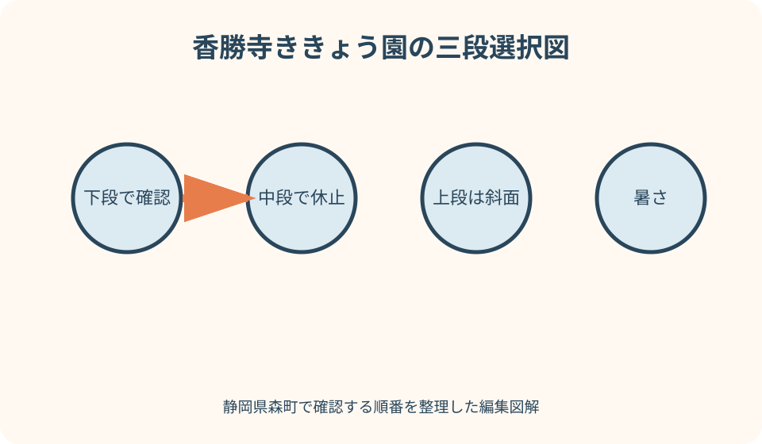
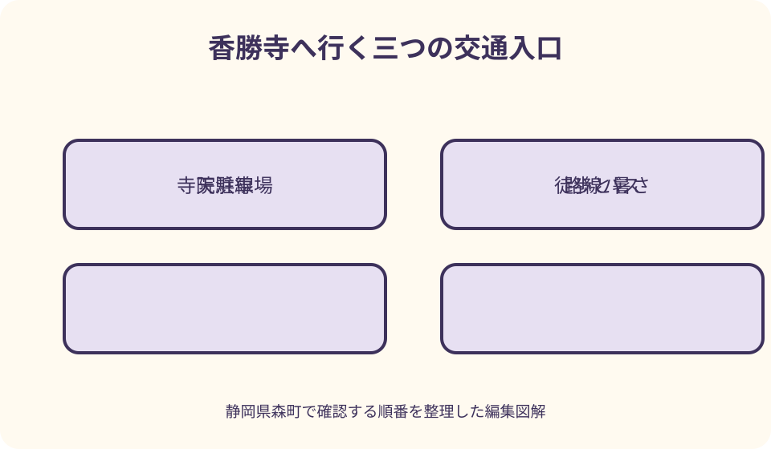

季節の花・寺院・ききょう｜最終確認 2026-08-10
静岡県森町・香勝寺のききょう｜開花確認と夏の庭園散策ガイド
香勝寺は森町草ケ谷の曹洞宗寺院で、境内のききょう園は平地の下段から中段、斜面の上段へ展開すると寺院公式が案内しています。青紫の花だけを目標にすると、強い日差し、雨後の斜面、虫、受付時間を見落とします。当年の開花と運営を確かめ、参拝を中心に歩ける範囲を選びましょう。

編集イラスト香勝寺とききょう園を知る
香勝寺公式は、遠州三十三観音霊場の札所である寺院の境内に、ききょう園が設けられていることを伝えています。花園へ入るだけでなく、本堂や観音へ向き合う参拝の場として訪ねます。
庭園は白龍頭観世音堂の西側に入口があり、下段の平地、中段、上段で構成されると寺院公式に説明されています。一枚の平面花壇ではないため、体力に応じて到達範囲を変えます。
上段は斜面の植栽と周辺の眺め、中段には庭や休息に関する案内、下段には別の花を含む庭が紹介されています。どこまで利用できるかは当年と当日の現地表示を優先します。
ききょう以外の花も境内にあると公式は案内しますが、すべてが同時に見頃とは限りません。主目的をききょうと参拝に絞り、他の花は開いていれば見る程度にします。
園の株数や花数は媒体によって表現が異なる場合があります。規模を競う数字より、寺院公式の現在の案内と、自分が歩ける区域を旅の判断材料にします。
開花は町と寺院の二つの更新で確認
森町公式の当年ページは、日を分けた写真と咲き具合を掲載しています。訪問候補日の前に、最後の写真がいつ撮られたかを見て、現在までの経過を数えます。
香勝寺公式にも開花・新着情報があり、開園変更、咲き進み、閉園など施設側の判断が掲載されます。町の比較写真と寺院の運営告知を一組で確認します。
ききょうは園内の区画や品種で見え方が変わります。全体表示が見頃でも、目当ての白花、二重咲き、斑入りなどが同じ状態だと決めません。
開花が遅れて当初予定から開園が変わった例を寺院公式が掲載しています。過去に決めた日程を固定せず、当年の開園確定を待つ必要があることを示す具体例です。
最新写真の後に猛暑、強雨、強風があれば、花と通路の両方が変化します。画面の咲き具合だけでなく、訪問日までの気象と現地からの追加告知を確認します。
開園・拝観・料金・駐車を当年でそろえる
町公式と香勝寺公式には開園期間や受付時間が掲載されますが、旅行日に使うのは同じ年の情報です。検索で先に出た前年ページの数字を現在の予定へ転記しません。
入園料金は年齢区分と金額を当年ページで確かめます。割引券、団体、現金以外の支払い、再入園など通常案内にない条件は、勝手に解釈せず寺院へ問い合わせます。
駐車台数の案内があっても、混雑日に空きが保証されるわけではありません。普通車、大型車、身障者用区画、乗降の扱いを必要に応じて寺院公式または問合せ先で確認します。
開園終了が近い時期は、花の状態により運営が動く可能性があります。受付へ着く時刻を見積もり、終了間際に駐車場から急いで走る予定を作りません。
寺院の行事や団体参拝が重なる日には、庭園の利用範囲や駐車が普段と異なる場合があります。新着欄を読み、花の記事以外の当日告知も確認します。
下段・中段・上段を体力で選ぶ
初めに下段の平地部で、気温、足元、同行者の疲れを確認します。到着直後に上段を目指さず、参拝と近い区域の花だけでも満足できる順番にします。
中段へ進む場合は、上りだけでなく戻る下りを想像します。休憩場所が公式に紹介されていても、席の空きや当日の利用を保証するものではないため、自分の休憩余力を残します。
上段は丘陵の斜面として案内されています。眺望が目的でも、暑さ、雨後、履物、膝の状態が一つでも不安なら、下から眺めて戻る判断を選びます。
園内を一方向に進む案内がある場合は逆行しません。撮り忘れた花へ戻るために流れを横切らず、次の区画で似た色や構図を探します。
車椅子、歩行補助具、ベビーカーを使う人は、下段が平地という説明だけで利用可能と断定しません。入口、幅、段差、鑑賞可能区域を寺院へ事前に相談します。
夏の暑さを花より先に管理する
ききょう園の季節は、日差しと湿度が体へ負担になる日があります。開園時刻の早い遅いだけでなく、訪問日の気温、暑さ指数、雷の可能性を気象情報で確認します。
帽子は周囲へぶつからないつばの広さにし、飲料は受付前に確保します。園内で必ず買える、自由に給水できると考えず、自分で持てる量を準備します。
斜面では平地より息が上がります。写真を撮る同行者の速度に合わせず、日陰または安全に止まれる場所で小まめに休み、体調が戻らなければ下段へ戻ります。
子どもや高齢者が顔色、返事、歩幅を変えたら、花の見頃に関係なく中止します。車へ戻ってから考えるのではなく、最短で受付側へ戻る道を係員に確認します。
汗で手が滑るとスマートフォンやカメラを落としやすくなります。ストラップを使い、飲料と機材を一度に抱えず、機器操作は歩行を止めてから行います。

雨・足元・虫への備え
雨の日は花色が落ち着いて見えても、上段へ続く斜面の安全は別に判断します。入口の舗装だけで園内全体を推測せず、受付で滑りやすい区域や閉鎖の有無を尋ねます。
靴底は溝と踵の安定を優先します。裾が長い衣服は濡れた草や泥に触れやすいため、歩幅を妨げない服装にし、替えの靴下や袋も用意します。
傘を差すと上段を見上げる視野が狭くなります。曲がり角、段差、すれ違いでは撮影をやめ、傘先を下げすぎて後ろの人へ向けないよう間隔を取ります。
境内の植栽や水辺には虫がいる前提で、肌の露出を調整します。虫よけを使う場合は花、仏具、他の参拝者へ霧がかからない場所で塗布し、境内の指示に従います。
蜂などを見ても手で払ったり、巣を探して植込みへ入ったりしません。係員に場所を伝え、その区画を離れます。強いアレルギーがある人は医師の指示に沿った準備を優先します。
雷の予報や急な強雨では、茶室や軒下へ自由に避難できると決めつけません。寺院の案内に従い、必要なら庭園を出て安全な場所へ移ります。
花の区域と寺院参拝を分けて歩く
花園の入口を見つけても、最初に本堂、観音堂、参道など参拝の区域と進行を確認します。庭園のチケットが寺院内すべての場所への入場許可になるわけではありません。
仏像、堂内、御朱印、鐘などは、それぞれ参拝や撮影の決まりがあります。花を撮影できるから堂内も撮れるとは考えず、表示または寺院の案内を確認します。
御朱印を希望する場合は、授与の有無、受付、書置きなどを当年の寺院公式で確認します。庭園の閉園間際に同時に頼めると決めず、参拝を先にします。
茶室や呈茶が紹介されていても、常時営業や席の確保を意味しません。提供の有無、料金、利用方法を当日に確かめ、休憩をそれだけへ依存させません。
花壇の地蔵や観音を撮るときも、装飾物として扱いません。合掌する人がいれば距離を取り、足元の植栽を踏まず、祈りの場を横切らない位置から見ます。
撮影は細い花姿と通路幅を両方見る
ききょうは茎が細く、花の高さも区画で異なります。近づくために花壇へ入ったり、茎を指で支えたりせず、焦点距離と自分の姿勢を調整します。
しゃがんで撮ると後ろから見えにくくなります。通路中央や曲がり角では低い姿勢を取らず、足を止めても人が通れる幅が残る場所を選びます。
白、紫、桃色、二重咲きなどを探すと画面ばかり見がちです。歩くときは機材を下げ、前の人との距離、段差、花壇の縁を目で確認します。
三脚、レフ板、モデルを伴う撮影、商用素材、ドローンは、通常の手持ち記念写真とは占有と安全性が違います。寺院へ事前に許可の要否を尋ねます。
SNSへ載せる前に、参拝者の顔、御朱印の個人情報、車両番号、撮影制限のある堂内が写っていないか確認します。撮れた写真すべてを公開する必要はありません。
電車・バス・車の入口を混同しない
香勝寺公式は、天浜線の森町病院前駅、路線バスの森町病院前停留所、車の高速道路出口を交通の入口として案内しています。それぞれ同じ場所や同じ運行主体ではありません。
鉄道利用者は天浜線公式で訪問日の往復列車と森町病院前駅の設備を確認します。寺院公式の徒歩目安に、信号、暑さ、雨、受付までの時間を追加します。
路線バスは秋葉バスなど運行事業者の最新時刻と運行日を確認します。駅名と停留所名が似ていても、乗車場所と帰りの方向を現地で照合します。
車はインターチェンジからの近さだけで判断せず、寺院の駐車場入口へ安全に進める経路を使います。満車時に周辺の病院や店舗へ停める代案は立てません。
帰路は花園へ入る前に決めます。公共交通なら早い便を本命、後の便を予備にし、車なら夕方の混雑と運転者の疲労を見て上段を省く余地を持ちます。
初夏の花巡りを一日へ詰め込みすぎない
観光協会は天浜線を使う初夏の花めぐりを紹介し、香勝寺のほか寺院や花の候補を掲載しています。モデルの順序をそのまま再現する前に、各地点の当年開園を確認します。
極楽寺のあじさい、小國神社周辺の花しょうぶなどは、ききょうと運営期間が完全に重なるとは限りません。両方の最新撮影日を見て、状態が合う一か所を主目的にします。
公共交通で二か所巡るなら、駅まで戻る経路、次の列車、徒歩、受付終了をつなげます。直線距離が近く見えても、寺から寺へ直接行く便があるとは限りません。
自転車は周遊の自由度が上がる一方、暑さ、坂、雨、駐輪、荷物が増えます。レンタル条件と返却時刻を確認し、花園の滞在を短くして帳尻を合わせません。
香勝寺だけで下段から上段、参拝、休憩を味わう一日も成立します。二か所目を減らした時間は余りではなく、体温を下げて安全に帰るための時間です。
混雑・見頃外・変更時の判断
駐車場へ入れないときは道路で空きを待たず、係員の案内に従います。指定された代替がなければ、町なかの食事や別日へ切り替え、近隣施設へ無断で駐車しません。
園内が混雑していたら、下段から上段まで進む順番を自分だけ変えません。人気の花に人が集まる場合は、その区画を飛ばし、帰りに空いていなければ撮影を諦めます。
咲き始めなら蕾と開いた花の違い、終盤なら花色と種になる過程を見るなど、当日の状態に観察を合わせます。満開写真の再現だけを成功条件にしません。
猛暑や雷で庭園散策が難しい場合、寺院の建物へ自由に長居できると思わず、参拝後に町内の営業確認済みの屋内施設へ移ります。
開園変更を当日知った場合は、門前まで行って外から花を探す計画にしません。香勝寺公式の周辺案内や町の観光パンフレットから、受入を確認できた候補を選び直します。

良い点
香勝寺は寺院自身が公式サイトで、庭園の区画、花の品種、参拝、交通、開花新着をまとめています。旅行者が当事者情報へ戻りやすい点が大きな強みです。
森町公式も撮影日を分けて開花状態を掲載するため、町の情報と寺院の発表を照合できます。開園変更のような運営判断も確認しやすいです。
平地の下段から斜面の上段まで選択肢があり、体力と天候に合わせて鑑賞範囲を変えられます。全部回らなくても寺院と花を味わえる構造です。
森町病院前駅や路線バスの入口が寺院公式に示され、車以外の検討もできます。訪問日の運行を別途確認すれば、町内花巡りの基点にできます。
注文したい点
当年ページから、下段・中段・上段を示す最新園内図へ直接移れれば、暑さや歩行に不安がある人が短縮範囲を決めやすくなります。
写真ごとに撮影区画と品種名が付くと、全体の咲き具合と目当ての花を分けて判断できます。色や八重咲きだけで場所を探す負担も減ります。
公共交通案内には固定時刻を置くより、天浜線と路線バスの最新検索へリンクし、駅と停留所の位置を一枚で示してほしいところです。
暑さ、雨、雷、虫、園内撮影についての注意を当年開園ページへまとめると、来園者が新着、境内案内、交通ページを往復せず準備できます。
満車時の待機可否と代替駐車の有無を明記すれば、周辺道路や近隣施設へ車が流れることを防ぎやすくなります。
代案・結論
当年の開園が確定していなければ、前年の開始日から推測して変更不能な旅行を予約しません。町と寺院の双方に当年記事が出るまで候補として保留します。
暑い日は下段と参拝、雨後は斜面を外す、雷予報なら訪問を変更するというように、危険要因ごとに削る区域を先に決めます。
見頃から外れた場合も、寺院として参拝するか、花を主目的に別年へ延期するかを選べます。別の花の寺へ急行する前に、その場所の当年情報を確認します。
結論は、森町公式の撮影日、香勝寺公式の開園判断、当年の料金と駐車、訪問日の交通・天候をそろえ、下段から体調を見て進むことです。
大石の視点
香勝寺の実用情報で重要なのは、花の本数より庭園が三段に分かれることです。どれだけ咲いていても、暑さや足元が合わなければ上段へ行かない。その判断を記事の中心に置きます。
私は現地を歩いたと装って、涼しかった、坂が簡単だったとは書きません。公式の区域説明と気象条件から準備を示し、当日の身体感覚は読者が入口で判断できるようにします。
開花が遅れて開園日が変わった公式記録は、自然の観光地に固定日がないことをよく示します。古い数字を残すより、最新告知へ戻る習慣を残す方が長く役立ちます。
寺院の庭では、きれいな写真が撮れないことより、参拝する人の流れを遮る方が問題です。一つの花を諦め、通路を譲る判断も訪問の質に含まれます。
下段だけで帰る日、花を見ずに参拝だけする日、訪問自体を延ばす日があってよいと思います。自然と寺院へこちらの予定を押し付けない余白が、森町の花巡りを丁寧にします。
公式情報・確認先
掲載内容は次の一次情報を基礎に整理しました。営業、料金、催し、交通は変わるため、出発前または手続き前にリンク先で最新情報を確認してください。
- 香勝寺ききょう園について（静岡県森町、2026-08-10確認）
- 森町の花めぐり動画公開（静岡県森町、2026-08-10確認）
- 観光パンフレット（静岡県森町、2026-08-10確認）
- 四季のイベント（静岡県森町観光協会、2026-08-10確認）
- 香勝寺ききょう園 開園案内（曹洞宗 鹿苑山 香勝寺、2026-08-10確認）
- 境内とご案内（曹洞宗 鹿苑山 香勝寺、2026-08-10確認）